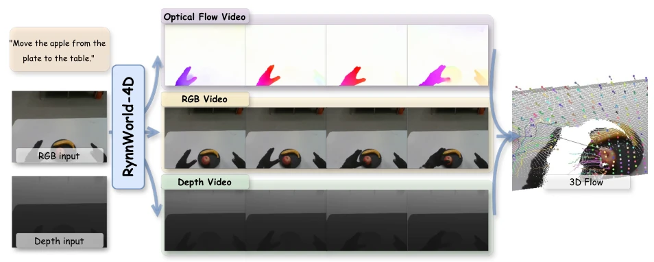
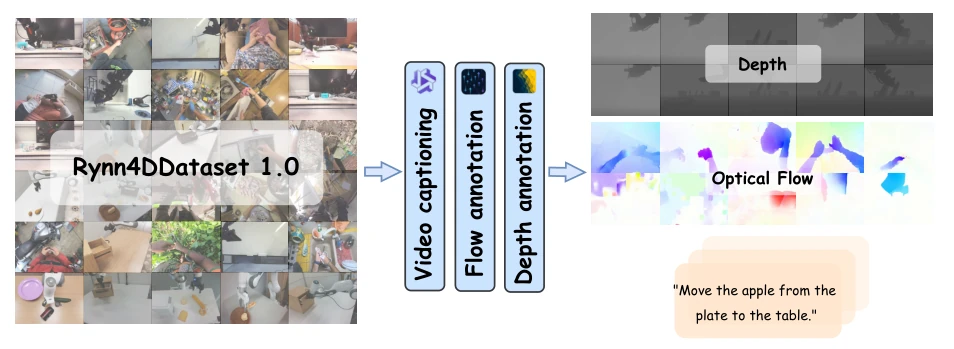
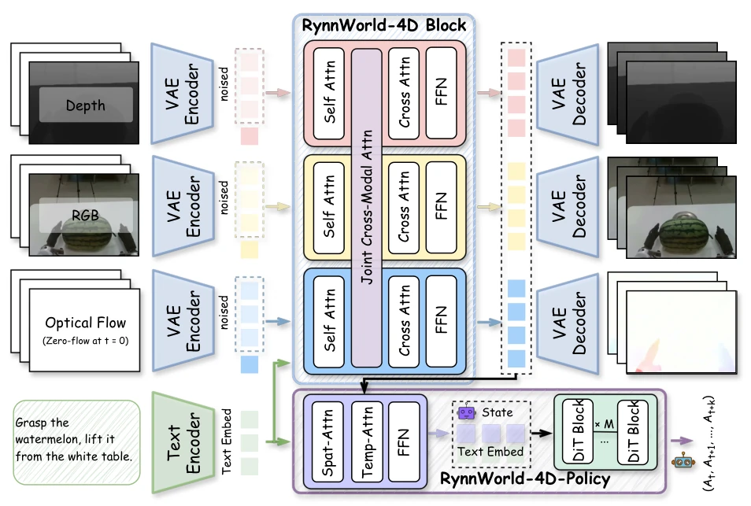
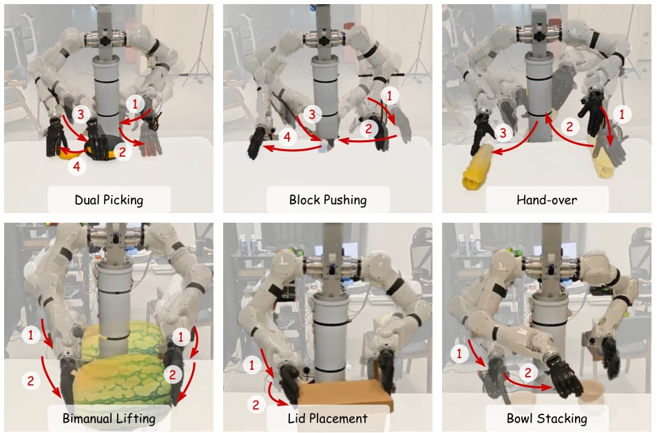
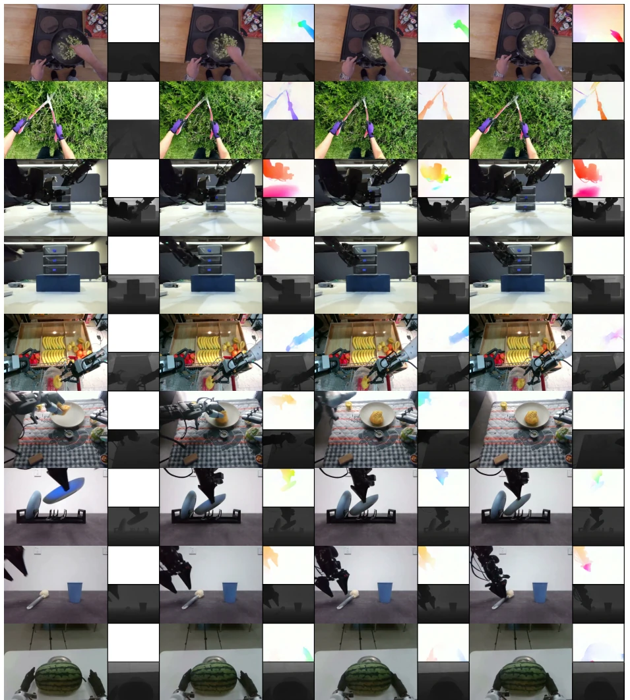
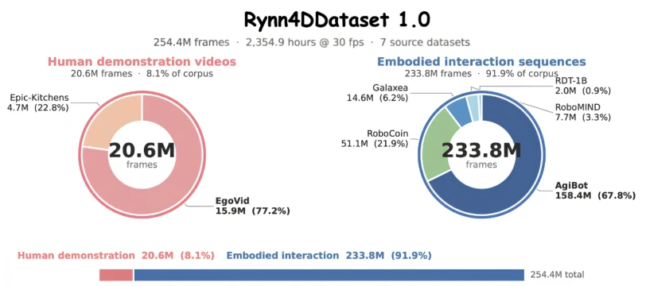
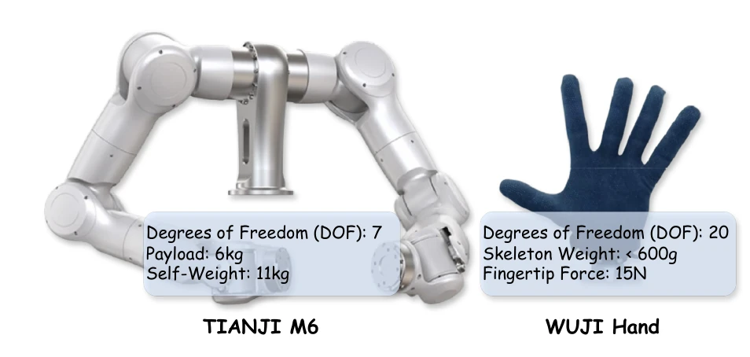
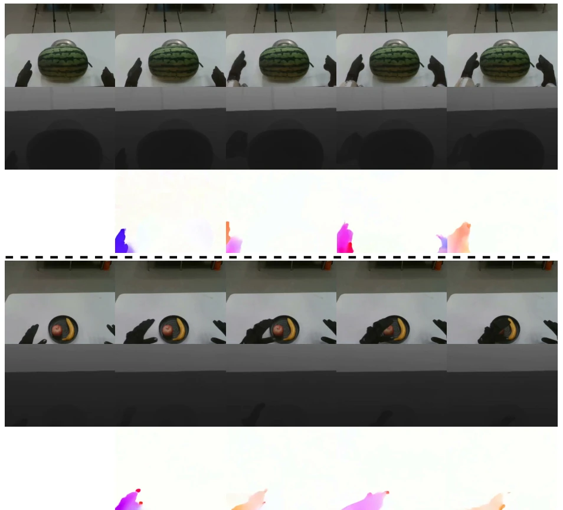

Alibaba DAMO Academy's recent move is quite robust, RynnWorld-4D transforms 4D world models from 'mere visualization' to 'understanding physics'. RGB, depth, and optical flow are employed simultaneously, indeed demonstrating a better understanding of robot manipulation than pure 2D video generation, addressing the pain point of pixel-level prediction lacking geometric constraints. However, the 9Hz control frequency is slightly strained for precision grasping, after all, a 1.1-second inference cycle is somewhat sluggish for high-frequency control, although real-time issues are alleviated through action chunking. Although claimed as SOTA, whether the quality of pseudo-labels in the 254M frame dataset can fully replace ground truth remains questionable, after all, depth and optical flow are both estimated. Overall, this is an important step for embodied intelligence from 'pixel-level' to 'geometry-level', successfully bridging the gap between generation and control, but still has a distance from true millisecond-level real-time closed-loop, future may require more efficient inference acceleration.
研究动机Motivation
开放世界机器人操作不仅需要识别场景，更要预判 3D 结构在交互下的运动。现有生成式视频模型受限于 2D 投影特性，丢失关键空间关系，导致深度感知交互困难 (Hu et al., 2024; Agarwal et al., 2025)。虽然 NeRF 或 3DGS 能建模 3D，但计算密集且难以扩展 (Mildenhall et al., 2021; Kerbl et al., 2023)。动态 SfM 缺乏从单图预测未来的生成能力 (Wang et al., 2025b)。现有 4D 模型如 4DNeX (Chen et al., 2025) 和 TesserAct (Zhen et al., 2025) 虽能建模，但缺乏显式运动场或难以与大规模视频扩散先验结合。因此，需要一种能融合几何与运动、兼容扩散模型扩展性的 4D 表示，以缩小世界预测与策略学习间的差距。
Open-world robot operation not only requires scene recognition but also predicting the motion of 3D structures under interaction. Existing generative video models are limited by 2D projection characteristics, losing key spatial relationships, leading to difficulties in depth-perception interaction (Hu et al., 2024; Agarwal et al., 2025). Although NeRF or 3DGS can model 3D, they are computationally intensive and difficult to scale (Mildenhall et al., 2021; Kerbl et al., 2023). Dynamic SfM lacks generative capability to predict the future from a single image (Wang et al., 2025b). Existing 4D models such as 4DNeX (Chen et al., 2025) and TesserAct (Zhen et al., 2025) can model, but lack explicit motion fields or are difficult to combine with large-scale video diffusion priors. Therefore, a 4D representation that fuses geometry and motion, compatible with diffusion model scalability, is needed to narrow the gap between world prediction and policy learning.

Figure 1 Given an input RGB-D image and description, RynnWorld-4D generates RGB, depth, and optical flow videos synchronously, which can be further lifted into 3D scene flow (right).
The overall process trains the RynnWorld-4D model based on Rynn4DDataset 1.0, then outputs actions via a Policy head. The core innovation lies in the projective 4D representation (RGB-DF), lifting pixels to 3D via depth, combined with optical flow back-projection into 3D scene flow, making geometry and motion explicit. The model adopts a three-branch Transformer architecture, processing RGB, depth, and optical flow separately, sharing Cross-Attention key-value pairs to reduce parameter cost. Introducing a Joint Cross-Modal Attention (JA) module, inserted once every three layers, enforcing inter-modal consistency, and using 3D RoPE to inject spatial position information, ensuring cross-modal spatial alignment. Training is divided into three stages: modality adaptation, frozen backbone joint attention, full parameter fine-tuning, accompanied by Branch Dropout to enhance robustness. The Policy part extracts 4D latent features from the frozen model, compresses them via Flow Former, inputs to Flow Matching policy head, achieving single forward pass action generation, avoiding multi-step denoising bottleneck, thereby supporting high-frequency closed-loop control.

Figure 3 Data Curation Pipeline. The video data is collected from diverse sources and partitioned into short clips during data preprocessing. Each clip undergoes a multi-modal annotation process: (1) Video Captioning: Qwen3- VL (Bai et al., 2025) generates detailed natural language descriptions of the video content; (2) Optical Flow Estimation: DPFlow (Morimitsu et al., 2025) computes dense per-frame motion fields, which are visualized and saved as flow videos; (3) Depth Estimation: Depth Anything 3 (Lin et al., 2025) produces monocular depth predictions, which are upsampled to the original resolution and saved as depth videos with a global depth range of [0.0, 5.0] meters.

Figure 4 Overview of RynnWorld-4D. Our pipeline leverages the large-scale Rynn4DDataset 1.0 dataset to train a generative model capable of predicting future 4D sequences. Given a single RGB-D observation and a language instruction, RynnWorld-4D co-generates future RGB frames, depth maps, and optical flow. These predictive 4D representations are then aggregated by RynnWorld-4D-Policy to derive the final robot actions.
The dataset Rynn4DDataset 1.0 contains 254 million frames, covering human and robot manipulation videos, generating pseudo-labels via tools such as Qwen3-VL and DPFlow. Evaluated on 6 real-world tasks (such as Lid Placement, Bowl Stacking), hardware is TIANJI M6 robotic arm equipped with WUJI HAND. Compared to baselines such as Diffusion Policy and π0, RynnWorld-4D-Policy significantly improves success rate on tasks with high spatial accuracy requirements (Lid Placement reaches 65.71%), especially showing obvious advantages in dynamic tasks like Hand-over. 4D generation quality is superior to existing 4D models such as 4DNeX in depth geometry (δ1=0.610) and optical flow consistency (AEPE=0.170). Ablation experiments prove that three-branch fusion and modality adaptation are crucial for performance, removing 4D pre-training leads to performance collapse. Inference latency is about 1.1 seconds, achieving 9Hz effective closed-loop control through action chunking, proving the value of predictive 4D representation for complex manipulation.

Figure 5 Real-world Manipulation Benchmark. We establish a comprehensive evaluation suite comprising six diverse tasks to assess the model’s performance in open-world manipulation, providing a rigorous testbed for our 4D world model.

Figure 6 Qualitative results of RynnWorld-4D. Starting from a single RGB-D image and a text prompt, RynnWorld-4D synchronously generates RGB video, depth maps, and optical flow, preserving sharp geometric structures and producing temporally consistent motion fields.
其他图片Other Figures

Figure 2 Composition of the Rynn4DDataset 1.0 dataset. We provide a large-scale hybrid collection of 254.4M frames, balancing human egocentric videos with diverse robotic manipulation data. This diversity ensures that the world model learns both general object interaction priors and robot-specific execution traces.

Figure7 StandardizedExperimentalPlatform. All real-world experiments are conducted on a unified hardware configuration consisting of the TIANJI M6 7-DOF robotic arm and the 20-DOF WUJI dexterous hand. This integrated system provides the high-precision control and high-dimensional actuation space required for complex manipulation tasks.

Figure 9 Extended qualitative results. Each row displays the generated RGB, depth, and optical flow sequences. The results highlight RynnWorld-4D’s ability to produce spatially and temporally coherent 4D predictions across various manipulation scenarios.